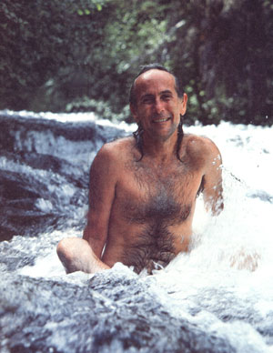
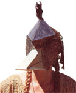
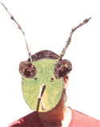
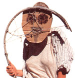
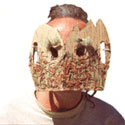

This "town crier of the global village" tries to awaken our spiritual connection to the earth.
THE COUNCIL OF ALL BEINGS had ended; the drumbeats echoing away like thunder, the energy and the tension leaving us. Now it was time to abandon this aweinspiring, 9,000-foot-high meadow in Montana's jagged Crazy Mountains. Time to wend our way back down to the campground and, ultimately, our homes.
The intense weekend had culminated in a ceremony in which a group of people took on the roles of other species and shared those creatures' concerns for themselves, the planet and that troublesome fellow speciesthe human. But I didn't have time to reflect on that experience just yet. Not now, when I finally had the opportunity I'd been waiting for all weekend; the chance to corner the Council's dedicated and singular leader, Australian John Seed.
Seed is probably the world's leading activist for rain-forest protection. "The town crier of the global village," the Christian Science Monitor called him. He has buried himself neck-deep in front of bulldozers to stop logging. He founded the Rainforest Information Centre (RIC), a global-action group doing everything from funding a lawyer for an endangered tribe in Sarawak to planting an "agricultural moat" around a jungle in Ecuador. Now (the summer of'88) he was roaming America, sleeping on floors and in forests' trying to awaken people's spiritual connections to the earth with a unique ceremony he had helped create.
Seed's impressive rain-forest resume had led me to expect an "ecovangelist"a solemn Cassandra of planetary doom and gloom. Instead, I found a long-maned troubadour flailing a guitar and crooning environmental ballads. A 43-year-old sprite with impish eyes and a soft voice ever quick to laugh.
Indeed, when I mentioned that I'd like my photographs to reflect his playfulness, he eagerly agreed to go jump in the creek. So as we started down the streamside trail, I soon found myself turning off my tape recorder-and taking off my clothes. (Well, how could I get close enough to shoot my skinny-dipping subject if I wasn't ready for a plunge myself?)
Like two intoxicated elves, we skipped from pool to pool, ducked into mossy nooks and swapped turns behind the camera. Then we'd drip dry, dress (he'd throw on a wraparound sarong, sandals and "Earth First!" T-shirt) and take to the trail again. I could then dutifully ask questions and record answers-until the next bend revealed another oh-so-alluring pool.
The farther downstream we went, the deeper and more intense the river became. Likewise our discussion. By trail's end, all frivolity had ceased. We abandoned our bit-and-dip mode of interviewing and sat, fixed, just above the campground. There, eloquently and passionately, John shared some of his deepest thoughts about the earth.
MOTHER: John, you've said that you used to look at trees as something for dogs to pee on. Now you'll chain yourself to them to save them. Tell me some of your story-what caused this personal turnaround?
Seed: In 1979, while I was working in a meditation center in New South Wales, Australia's first environmental confrontation over forestry issues occurred not five miles from where I lived. I was shopping at the market when one of the locals appealed to people to come the next day and try to stop the Forestry Commission from logging Terania Creek, an area that contained some of the last subtropic rain forest in the country. I didn't want to get involved. I had never even been to Terania Creek. I was a Buddhistsomeone who just stayed cool and watched as things rose and passed away.
I still can't remember what motivated me to go down there, but I did, and through the events that followed, my life totally changed. Two years later I had lost all interest in meditating and growing my own food and had become an activist going from one environmental dispute to another.
MOTHER: Was there a specific turning point?
Seed: We were involved in nonviolent direct action: standing in front of bulldozers, climbing up trees in the paths of loggers and so on. Somehow, when I got inside the rain forest in the heightened state of awareness that comes from being chased by police or in danger of my life, the rain forest got inside of me. It was able to become integrated with my puny intelligence and use me for its own protection. The experience was the warmest connection that I believe we human beings are able to have in this world.
MOTHER: Were your Terania Creek actions successful?
Seed:Yes, but all they saved was Terania
Creek. We had decided to try to protect the whole surrounding Nightcap Range. So in 1981 we went back up against the machinery. Several hundred of us were arrested. After we'd spent over two months camped up on Mount Nardi, conducting actions daily, public opinion polls showed that 70% of the people of New South Wales wanted an end to rain-forest logging. So the government created six parks, including a Nightcap one.
Then the Tasmanian Wilderness Society asked for our help. They had been trying for five years to stop the proposed Franklin Dam, a structure that would have flooded the heart of Tasmania's temperate rain-forest wilderness. About 12 of us went down and helped establish a blockade that went on to become the largest environmental confrontation in Australia's history. More than 3,000 people took part. This was just before the federal elections, and there was so much interest that Bob Hawke, the Labor Party candidate for prime minister, promised that if elected he would stop the dam.
So three weeks before the election, we fanned out to I I marginal electorates around the country and knocked on every door twice. We swung all 11 areas, the Labor Party was elected, and Bob Hawke's first words after the results were announced were, "The dam will not be built."
MOTHER: You all must have felt pretty powerful by then.
Seed: Yes, we'd had quite a lot of success, especially using civil disobedience as a kind of theater of social change. By burying ourselves in the paths of bulldozers and such, we were able to get media coverage whenever we wanted. Gradually, the ecological message would sink in, an opinion poll would show that people agreed with us, and the government would finally act. Consequently, the better part of Australia's rain forests are now legally protected.
But after a while, we began to realize that these issues were global, not merely national. The earth's rain forests are our planet's Noah's ark-they are home to half of the world's 10 million species. They're incredibly useful to us for foods, medicines, industrial products, cooling the earth by absorbing carbon dioxide-you name it. Yet they're being destroyed so rapidly, at the rate of 50 million acres or more a year, that less than a single lifetime remains before they could all be utterly annihilated.
I am Raven. I ask you to join us birds in our song when the sun rises and the sun sets. Live in the moment. Keep your life simple. Get rid of all those things that make life on this planet hard for us. Live simply, as we always have.
Scientists around the world were wringing their hands about this situation, but no one was doing anything to change it. So we realized that, as activists from the only developed country that contains significant amounts of rain forest, it was obviously up to us. We formed the Rainforest Information Centre and have been working on international rainforest issues ever since. I've been to much of the world trying to protect rain forests-to the Solomon Islands, Malaysia, India, New Guinea. In 1984 1 took a road show to the U.S., which led to the creation of your country's Rainforest Action Network (RAN), an organization that now has groups in 50 different cities.
INDEED, SEED WAS DOING MORE this past summer than leading the Council of All Beings. Between those weekend ceremonies he traveled the country, raising concern and money for the Penan, a threatened tribe that since time immemorial has lived in the rain forests of Borneo. With the help of Bruno Manser, a Swiss anthropologist (now hiding out in the jungle), these barefoot, barechested forest people have built bamboowall road blockades to try to stop Malaysian loggers. More than 100 Penan have been arrested and jailed and will go on trial sometime this year. The Rainforest Information Centre has found an international lawyer to represent the blockaders, created networks to send them food and supplies, and organized demonstrations and petition drives against the Malaysian government.
Another remarkable effort is the Tobar Donoso Project in Ecuador. Illegal logging and colonization threaten this 300,000-acre rain-forest preserve, the home of 10,000 Awa Indians. The Awa have slashed a 150mile-perimeter border, and the RIC is starting fruit tree nurseries to develop sustainable agriculture along this border in an attempt to provide sources of food and income and thus relieve some of the economic pressure on the forest. This concept, if successful, might then be used to buffer other preserved rain forests.
Every cent Seed earned from last summer's Council of All Beings went to support the Ecuador project. His only personal income came from selling items like books and tapes.
MOTHER: I understand how your Australian group could help save forests in your own country, but what can an action group in the U.S. do about rain forests on the other side of the world?
Seed: We can't directly influence governments like Brazil, Malaysia or Indonesia. But we can stop the World Bank and other organizations from funding themand we can stop consuming the products of their destructive practices. The United States is the second-largest importer of rainforest timbers in the world. Only Japan buys more, and a lot of the wood Japan imports gets used in products that are then sold to the U.S. So we need to teach people and governments not to use tropical timbers like mahogany, meranti, teak, lauan and Pacific maple.
There're other things we can do. Last year, RAN groups identified Burger King as the biggest importer of Central American beef. As you know, much rain forest in that region is destroyed to raise cattle for American hamburgers. So these groups proclaimed a "Whopper Stopper" month last May and held demonstrations in about 50 cities. In a typical demonstration, a papier-mache cow would eat rain-forest leaves and then excrete Whoppers onto the pavement.
These actions received a lot of publicity so much that Burger King sales dropped 11 % during May. Finally, Pillsbury, Burger King's parent company, agreed to stop importing beef from the target countries. Two weeks later, a Costa Rican newspaper announced that the country's beef exports had dropped by 80% because of Burger King's, pullout.
Now, I'm not trying to say that was a solution; no doubt, Costa Rica got rid of its beef somewhere else. Plus, Burger King is now using domestic beef, and that brings up a whole other story which I hope Mother Earth News covers sometime-namely, that the livestock industry in this country is as huge a cause of environmental destruction as cattle are in Costa Rica. I'm only pointing out that these small, decentralized actions are definitely the sort of direction that rain-forest protection has to take.
MORE THAN ONCE SINCE OUR MONTANA meeting, Seed wrote to me, citing John Robbins' book, Diet for a New America, and urging me to cover America's livestock industry. So OK, John, briefly, here goes:
According to Robbins, over 80% of the corn, oats and soybeans raised in the U.S. are eaten by livestock. Directly and indirectly, they consume half of all water used in the U.S. and cause 85% of our topsoil loss. Two hundred sixty million acres of our forest have been clear-cut to create cropland for livestock. Ninety per cent of harmful organic wastewater pollution in America is attributable to livestock. Most of this damage could be reversed if Americans ate less meat. Indeed, one acre of trees is spared each year by each individual who switches to a purely vegetarian diet.
The book goes much, much further. Indeed, Seed wrote, "The power of the last chapter of Diet for a New America was such that, as I read it, at one stroke all animal products fell from my diet. Painlesslywithout effort or sacrifice."
MOTHER: John, we've been talking about stopping bulldozers and boycotting timbering, but what I just finished doing was adopting the role of Insect-and you, that of Rock-in the ceremonial Council you hosted here. What's the connection?
I am Insect;you insult me and call me Bug.You are repulsed andspray me- in your homes,your yards and your farms.But I do much goodandhave my rightful placein the order of things.I ask you tolook before you spray,to see bow many strandsof the web of life you roughly shake,and to seeka gentler way.
Seed: After doing a lot of work trying to educate the public through news media, films and books, I began to realize that environmental lethargy in the developed countries is not due to a lack of information. True, a lot of people don't know the full extent of these horrors, but basically anyone who reads the newspaper or listens to the radio has a sense of the trouble we're in. Yet that knowledge doesn't really change behavior. I began to think we had to figure out ways to get beyond merely providing information -to help people get ecological identities instead of just ecological ideas.
A lot of this thinking is based on deep ecol ogy, a term coined by Arne Naess, professor emeritus of philosophy at Oslo University in Norway. The basic idea of deep ecology is that humanity is only another member of the biotic community. The world isn't a pyramid with us humans on top. We're not the crown of creation, the measure of all meaning. Instead, the world is a web and we humans just one strand in the web. Other species have just as much importance and right to exist as we do.
Naess wrote that when most people think about conservation, they think about sacrifice. This is a treacherous basis for conservation, because most people aren't capable of working for anything except their own self-interest. And, unfortunately, society has bequeathed to us a narrow, shrunken sense of what that self is. It doesn't even include the air we breathe, although all we have to do is hold our breath for two minutes to realize how realistic that is. Our actual self is part of all of nature. We're not skin bags separate from everything else.
Naess argued that we need to find ways to extend our identity into nature. Once that happens, being out in front of bulldozers or whatever becomes no more of a sacrifice than moving your foot if you notice that someone's just about to strike it with an ax. Naess stated that we need community therapy to get rid of this illusory sense of separation, to develop ecological self.
That's what the Council of All Beings is. Joanna Macy and I developed it to help people gain this kind of passionate identification. You see, it doesn't matter if I learn that 55 million or 45 million rain-forest acres are being destroyed each year instead of 50 million. What's relevant is that I realize that it's my planetI'm part of it and it's a part of me and thus decide to throw my life behind protecting its diversity, complexity and beauty.
I'VE SINCE THOUGHT BACK UPON MY experience at the Council. The first part of the weekend consisted of a range of exercises: a Cherokee sunrise dance, guided visualizations, nature explorations, reading a eulogy for animals-even reenacting our species' evolutionary progression (an exercise that included slithering, snakelike, on the ground). Saturday afternoon, we were instructed to go off in the woods, seek an "ally" to represent at the Council, then come back and create a mask for that creature or force.
I wanted to be Soil or Water, two obviously significant aspects of our planet. But after I settled atop a big boulder in a thicket of firs and ferns, a remarkable progression of insects walked on me, landed on me or buzzed by me. Finally, when four different ones rested on my four limbs-and a fifth, my noseI took the hint. I went down to camp and made a mask of a generic, all-purpose bug.
The next day, 13 of us masked creatures gathered in a circle. We put two humans in the center and then aired our grievances against this shortsighted and inconsiderate species. The first, Mountain Lion, circled the humans on all fours, growling, reprimanding, screaming and crying with grief. We each, in turn, talked about ourselves and expressed fear, bewilderment and anger toward the humans.
Later, we changed tacks and, one by one, offered advice and gifts of some quality we possessed. When the humans humbly accepted these offerings, we all broke into a circle dance. The Council ended on this positive note, and we moved over to a campfire, where we burned our masks to "release" the spirits we had represented.
MOTHER: John, you wrote once that the Council of All Beings "prepares and allows people to hear within themselves the sound of the earth crying." I should admit, though, that while I got a lot out of the Council we just held, I didn't have a transcendent experience.
Seed: I was a little disappointed, too. I think this has probably been the least intense of all the Councils I've held in the States. I'm not really sure why. Perhaps it's because my own energy has been really low the past couple of daysI've been a bit washed-out and depressed. Maybe it's because many of the people here are Earth First! activists who've participated in direct actions for wilderness and already have ecological identities. I've always felt that the highest-and fastest working-form of community therapy is for people to actually put their lives on the line for wilderness.
MOTHER: Still, you're saying that you have seen higher experiences at a Council.
Seed: That's right, it happens. Sometimes one person will have an intense new experience that will just sweep everyone else into that level. The air will feel thick with energy, and there'll be a kind of group catharsis that will leave you with your heart pounding.
I am Spiderwho lives by the creek.I have patience.I create a web and sit there all day,waiting for an insect to fly by.To humans,I give the patienceto just sit still andlisten to the creek running by.Listen to the stories and songsit has to tell you.Watch the birds that play in itand the flowers that wave at itand the trees that fall into it.just sit and listen.
Of course, just the fact that every weekend now a group of people come together with the shared intention of healing their relationship with nature is a pretty profound thing in itself. It may not always be necessary to have a singularly powerful experience to start to realign one's life in harmony with the earth. People may just come out of the Council saying, "I'm going to refuse plastic bags at the supermarket," or "I'm going to bicycle to work instead of driving a car." Unless we start making our lives sustainable by doing things like that, it doesn't matter how many spiritual experiences people have.
MOTHER: John, when you talk about spiritual experiences, it makes me wonder: Are you trying to create a religion?
Seed: Create a religion-that's putting it bluntly. There's no doubt in my mind that we are related to the planet in the same way leaves are related to a tree. In my mind, that's not a religious perception-just the truth. I know we weren't created 6,000 years ago by an old man with a white beard. We weren't created by spaceships coming down and fertilizing some orangutans. The story of evolution is my creation story.
I believe that humans can have the same incredible spiritual experiences through ecology and nature as they do through Christianity or Buddhism or so on. And in my opinion, allowing one's religious feelings to arise in the context of nature and evolution is the only thing that can unite us as a planet.
MOTHER: Where is your work going next? Seed: I still take part in nonviolent protests. Just before I left Australia, I was part of a group that buried itself in a cave deep in the mountains of Queensland to stop a limestone company from blasting for cement. But I'm trying to find a balance in my life between that kind of direct action and working on the spiritual level-because I do believe that what we're facing is primarily a spiritual crisis. The ecological crisis is primarily a crisis of values and of identity.
I often get the feeling that everyone's given updecided that it's simply too hard to change our lifestyles-so we've all made a suicide pact with each other. We have agreed that we're just going to go out in a few generations' time and said, "Let's not tell the children."
Maybe I'm exaggerating; the earth may be far more resilient than we can imagine. Maybe someday we'll look back at the present time and say, "Wow, that was really close!" Then again, maybe the earth will no longer be capable of supporting complex beings such as mammals, but the grasses and insects will survive and continue to evolve. Or it may be that the destruction will pass a point of no return and the planet will decompose back to its constituent elements; if you strip a certain amount of bark off a tree, it doesn't become a barkless tree, it dies.
Now, I don't blame the humans for this. Everything dies. If we're the cancer cells killing the earth, so be it. You can't blame the disease-we're not unnatural, we're just another part of the planet. So this incredible guilt we sometimes feel is unwarranted and unuseful.
However, the earth could die in another two or three generations, or it could last until the sun goes nova about 4,000 million years from now. If I have a choice, I prefer its enduring the 4,000 million years.
And I know we could help it last that long-if the good will was there. If we could let go of the ideas-religious, national and other-that separate us and could develop an overriding concern to continue to evolve, we have the technology to create the most incredible life, one where human beings would be in harmony with everything.
MOTHER: What would such a lifestyle be like, and how could we achieve it?
Seed: For a start, it would involve a progressive decrease in population until further notice. We'd lower the birthrate, and since this would result in a lot fewer younger people, we could spend much more time looking after all the older ones.
We'd also confine all future development to areas already developed by humans. More than that, we'd start using the Bradley method to bring the wild places back. This is a technique of nature restoration developed by two sisters in Australia. You don't have to plant anything. Instead, you find your strongest point of natural growth and protect it. Remove all of the exotics and such threats as fire, goats and weeds.
So we'd slowly move back out from the most vigorous natural places, working toward a situation where 99% of the land would be turned back into wilderness. The whole world would be a national park spinning through space, and there'd be small enclaves of human beings whose satisfactions came not from materialism but from the love of nature and spirit. We have the technology, genetic engineering included, and the earth has so much generosity that we could create a beautiful, beautiful life.
It would still be an earth that's impoverished. We've already lost a lot of species, and many that remain are what biologist Daniel Janzen called the living dead: They are no longer part of breeding populations in any long-term sense. There're only 400 mountain gorillas, for instance, so genetic drift will almost certainly take care of them.
Finally, humans, I, Rock,speak to you.I ask you to wake upWake up, humans,wake up!and-pledgeyour allegiance to life. Even though others maylook upon you as traitors,speak on our behalf inall human meetingsand councils.Speak with strength and courageand power because yourep resent a 11 of us who ,in the normal course of events, haveno voice.We ask you to give voiceon our behalf
But if we wake up in the next 10 or 15 years, I feel that an incredible future may still exist for us and other complex life on this planet. If we don't wake up by then, I don't see it. Either we're going to get it together, you and I, now, in our lifetimes, or we can forget the whole thing. After all, look at the graphs of destruction rates. They're all steeply rising J curves-whether you look at the carbon dioxide cycle, ozone layer, gene pools in species, or pollution. And when you look at the combination of these things-and I've looked at nothing else for 10 years-you'll see that there is no hope within the dominant cultural paradigm. There's no hope that a bit more national park here or pollution control there is going to do the slightest good. Nothing our action groups have done in the last 10 years to preserve the rain forest is even noticeable on its J curve. The acceleration of its destruction is still continuing.
MOTHER: You don't make the future sound very promising.
Seed: Not unless there's an incredible spiritual revolution, a new wave of consciousness that more or less sweeps through humanity in our generation. That may sound impossible, but it could happen. It would require nothing more miraculous than the miracle of us emerging from the sea or of reptiles turning into birds. I know these things took place over long periods of time, but what we're talking about isn't a physical evolution but a spiritual one-so it could be almost instantaneous.
Even the theory of evolution suggests this might happen, because it indicates that environmental pressure causes evolution. Most species have been repeatedly pushed around by ice ages and such.
Environmental pressure is the invitation to change, and the threat of extinction is the ultimate environmental pressure. If we really face that threat, not hiding in myths or denial, and really pray and work for a spiritual evolutionary change, that may be enough for it to take place. Evolution often seems to happen in surges-the theorists call it punctuated equilibrium-so maybe that will happen with us.
MOTHER:And if not?
Seed: If it should turn out that we're going to become an extinct species during my lifetime, I would like to go extinct with equanimity. I hope I don't become hysterical about it, but calmly accept my death and our extinction.
Nonetheless, I'm still at the stage of denial. I don't accept death yet. And I can find nothing more valuable or satisfying to do than to work against that possibility-to cast my life as a vote against extinction.
THE RAINFOREST ACTION NETWORK is the key American information and organizing group. In return for a $15 (or greater) tax-deductible donation, you'll receive the quarterly World Rainforest Report and periodic "Action Alerts." You can also write RAN to learn about the Council of All Beings workshops that Seed will conduct in the U.S. next summer and to discover a number of specific ways you can support both their Penan and Awa projects.
Thinking Like a Mountain by John Seed,
Joanna Macy, Pat Fleming and Arne Naess contains the rationale for the Council of All Beings and serves as a guidebook on how to hold your own council. It's $9.45 postpaid from Madison Rainforest Group, 29 E. Wilson #202, Madison, WI 53703. "Earth First!" a video Seed coproduced about the Australian fight to preserve rain forest, and two audio cassettes, "Earth First!" and "Nightcap Rain Forest" (the first one contains "eco-songs"; the second, both songs and documentary), are also available from the Madison Group. The video costs $42 postpaid; the cassettes, $ 10 each.
Diet for a New America by John Robbins is a critique of America's meat-centered diet and its effects on our environment. It's available for $13.45 postpaid (California residents add 660 sales tax) from Earth-save Foundation, P.O. Box 949, Felton, CA 95018.
|
 © PAT STONE |
 © PAT STONE |
 © PAT STONE |
|
 © PAT STONE |
 © PAT STONE |
|